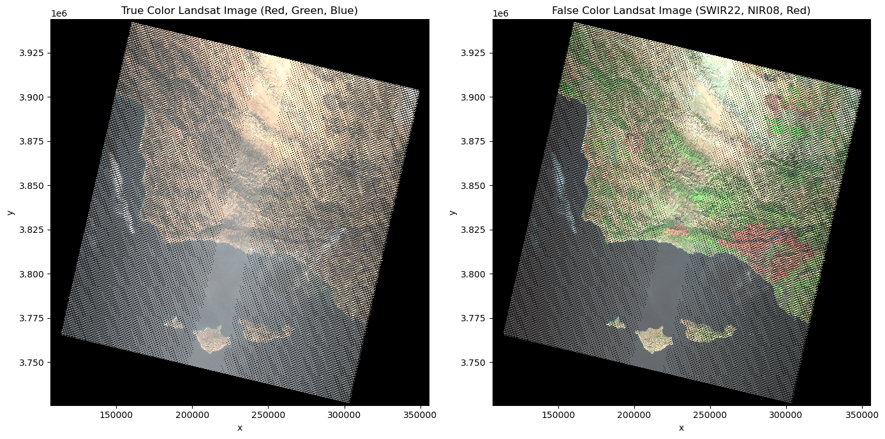
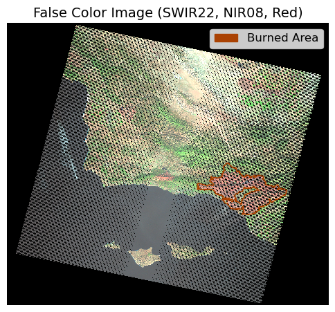

Google earth V 6.2.2.6613. (December 13, 2017). Santa Barbara, United States. 34.6099° N, 120.0665° W, Eye alt 13.72 feet. DigitalGlobe 2020. http://www.earth.google.com [December 12, 2023].
The Thomas Fire
On December 4, 2017, a Santa Ana wind event with historic duration swept throughout Ventura and Santa Barbara County with an average speed of 32 m/s and early gusts as high as 35 m/s (Fovell, Gallagher, 2018). Southern California’s Mediterranean climate creates an abundance of ample fire-fuel during the highest stress period for vegetation, typically between July and the first rain fall following summer (Nauslar, Abatglou, Marsh, 2018). As a result of frequent and unprecedented wildfires invasive weeds and grasses, also known as “flashy fuels”, dominate large land parcels making them more fire prone (National Parks Service, 2023). These combined factors, alongside weakened and outdated electrical infrastructure introduce high wildfire risks throughout large portions of the state. Soon after the Santa Ana winds picked up, a “line slap,” was shared between Southern California Edison (“SCE”) powerlines, sparking hot materials which then ignited a nearby fire-fuel bed (Ventura County Fire Department, 2019). This rapidly developed into the Thomas Fire, and within an hour, the same circuit was also responsible for the Koeningstein Fire (Ventura County Fire Department, 2019).
All together, these fires devistated both Ventura and Santa Barbara County for a total of 40 days. The Thomas Fire alone consumed total of 281,893 acres; destroying 1,063 structures and claiming two casualties (one civilian and one firefighter) (CAL FIRE, n.d.). Though, even greater losses occured in January 2018, as a result of mudslides in the areas impacted by the fire. Unfortunately, 23 lives were lost due to debris flow in Montecito (Wildfire Today, n.d.;California Govenor’s Office of Emergency Services, n.d.). As of 2019, SCE agreed to a $360 million settlement to address the conglomorate negative impacts caused by the Thomas Fire, Koeningstein Fire, and the Woolsey Fire (Nov 2018). To help reduce wildfire risks and prevent a similar trajedies, utility companies across the state have invested in structural hardening (Lazo, 2024). Although, that is not the only proactive wildfire mitigation tactic being exercised. Members of the USDA Forest Service and the California Air Resources Board (CARB) are devoted to identifying areas with surplus fire-fuel accumulation to conduct prescribed (“Rx”) burns. Further implementation of proactive land managment practicies can strengthen California’s resiliency against extreme and unprecedented weather events. Thus securing greater safety and security for the state’s natural spaces, structures, and residents.
Objective
To gain a better understanding of the initial environmental and public health impacts primarily caused by the Thomas Fire, we will:
Quanitfy and visualize the amount of air pollution in Santa Barbara County between 2017/01 - 2018/10 using the Daily AQI and the average AQI over a 5 day rolling window in units of ppm.
Examine the burn scar using false-color imaging (red, green, blue, near-infrared and shortwave infrared bands) from the Landsat-2 Collection 2 Level-2 atmosperically corrected surface reflectance satellite data from the Microsoft Planetary Computer (“MPC”).
Outcome
The figure on the left displays the mean AQI ratings with respect to the AQI Health Guidelines. A sharp peak may be observed in the Very Unhealthy category when the Thomas Fire began (Dec. 4, 2017). Whereas the a 5 day period average was primairly in the Unhealthy category throughout this period, only slightly reaching the Very Unhealthy rating. This trend can be observed at the noted location in the figure below. The figure on the right, displays the large parcel of Santa Barbara County that was engulfed by the Thomas Fire. The sheer size of this fire clearly reveals why there was such an uptick in particulate matter observed in December of 2017. These spikes in AQI indicate negative public health effects on air quality resulting from the Thomas Fire in combination with the neighboring fire.
For our true and false color imagery, we are going to direct access Microsoft Planetary Computer Landsat Collection 2 Level-2 data. The STAC item utilized for this project is ****LE07_L2SP_042036_20171217_02_T1****. The raster data was collected on 2017-12-17.
This data should be used for visualization purposes only.
California Fire Perimeter Data for Burn Scar Visualization
US Environmental Protection Agency (2023). Daily AQI by County [Data File]. Available from https://aqs.epa.gov/aqsweb/airdata/download_files.html#AQI. Accessed October 25, 2023
Microsoft Planetary Computer. Landsat Collection 2 Level-2 [Dataset]. Available from https://planetarycomputer.microsoft.com/dataset/landsat-c2-l2. Accessed November 28, 2023
California Department of Forestry and Fire Protection (2023). California Fire Perimeters (all) [Data File]. Available from https://gis.data.ca.gov/datasets/CALFIRE-Forestry::california-fire-perimeters-all-1/about. Accessed November 28, 2023
Software Specifications
Code
#------------------------------------# ---- Load the Essentials ----#------------------------------------# Reading in libraries and functionsimport osimport warningsimport numpy as npimport pandas as pdimport pystacimport planetary_computerimport rasterioimport xarray as xrimport geopandas as gpdimport rioxarray as rioxrfrom shapely.geometry import Polygonimport matplotlib.pyplot as pltfrom matplotlib.lines import Line2Dimport matplotlib.patches as mpatches
Read & Wrangle SB County AQI Data
To simplify the workflow, it’s best to combine the 2017 and 2018 data sets, and wrangle a single concatonated dataset.
Once the dataset is combined, select the region of interest (ROI) and correct the Date dtype so it may be used as the index to calculate the average Air Quality Index over a 5 day rolling window.
Code
#------------------------------------# ---- Read & Wrangle ----#------------------------------------# Reading in the dataaqi_17 = pd.read_csv('https://aqs.epa.gov/aqsweb/airdata/daily_aqi_by_county_2017.zip') aqi_18 = pd.read_csv('https://aqs.epa.gov/aqsweb/airdata/daily_aqi_by_county_2018.zip') # Glueing the datasets togetheraqi = pd.concat([aqi_17, aqi_18]) # .str.replace(' ','_') to replace the space for _aqi.columns = aqi.columns.str.lower().str.replace(' ','_') # Subsetting using loc# selecting SB countyaqi_sb = aqi.loc[aqi.county_name =='Santa Barbara'] # isolating desired columns aqi_sb = aqi_sb.iloc[:, 4:] # Datetime Indexing# converting the date type to datetimes64aqi_sb.date = pd.to_datetime(aqi_sb.date) # updating the index to the data column aqi_sb = aqi_sb.set_index('date') # Rolling Window Mean Calc# provides rolling window calculations of # the mean aqi over 5 day periods aqi_sb['five_day_average'] = aqi_sb.aqi.rolling('5D').mean()
Check-point
Is everything looking as we expect it to?
Code
#------------------------------------# ---- Check Point! ----#------------------------------------# Checking that dataframes joined properly and column names changedprint('The number of aqi observations in 2017 were:', len(aqi_17.Date))print('The number of aqi observations in 2018 were:', len(aqi_18.Date))print('The number of aqi observations between 2017-2018 were:', len(aqi.date))
The number of aqi observations in 2017 were: 326801
The number of aqi observations in 2018 were: 327541
The number of aqi observations between 2017-2018 were: 654342
AQI Visualization: Scatter Plot of 5 Day Average AQI Assessment, Santa Barbara County (Jan 2017 - Oct 2018)
The visual below displays the daily mean AQI and the average AQI over a 5 day rolling window between January 2017 and October 2018. The background of the plot is color categorized according to the AQI’s six categories of concern for ppm levels. A relative trend of moderate is seen throughout the year. However, a spike in air pollutants between the months of December 2017 and January 2018 is clearly observed. The sharp initial peak observed the day the Thomas Fire began (Dec. 4, 2017) caused an inital AQI response within the Very Unhealthy category and over a 5 day period, averaged out into the Unhealthy category. This trend can be observed at the noted location in the figure below, indicating negative public health effects on air quality resulting from the Thomas Fire and the other neighboring fire.
Code
#------------------------------------# ---- Customization ----#------------------------------------# Define AQI categories and colorsaqi_categories = {'Good': (0, 50, '#00E400'),'Moderate': (51, 100, '#FFFF00'),'Unhealthy for Sensitive Groups': (101, 150, '#FF9933'),'Unhealthy': (151, 200, '#FF0000'),'Very Unhealthy': (201, 300, '#8B0000'),'Hazardous': (301, 500, '#800080')}colors = {'aqi':'#f69517','five_day_average':'#360F39'}#------------------------------------# ---- Visualizing AQI ----#------------------------------------fig, ax = plt.subplots(figsize=(12, 8))# Plot AQI categories as background colors for associated rangesfor category, (lower, upper, color) in aqi_categories.items(): ax.fill_between(aqi_sb.index, lower, upper, color=color, alpha=0.2, label=f'{category}')# Plot the AQI and 5-Day Rolling Averageaqi_sb.plot(ax=ax, y=['aqi', 'five_day_average'], color=colors, xlabel='Date', ylabel='AQI Values (ppm)', ylim= (0,400), legend=True )# applying customizationsax.set_title('Air Quality Index (AQI) Assessment of Santa Barbara County 2017-2018', fontsize=18) # add a legend for background colorsbackground_legend = [Line2D([0], [0], color='#00E400', lw=4, alpha=0.3), Line2D([0], [0], color='#FFFF00', lw=4, alpha=0.3), Line2D([0], [0], color='#FF9933', lw=4, alpha=0.3), Line2D([0], [0], color='#FF0000', lw=4, alpha=0.3), Line2D([0], [0], color='#8B0000', lw=4, alpha=0.3), Line2D([0], [0], color='#800080', lw=4, alpha=0.3)]# add background color legend to the plotbackground_legend_art = ax.legend(handles=background_legend, labels=['Good', 'Moderate','Unhealthy for Sensitive Groups','Unhealthy', 'Very Unhealthy','Hazardous'], loc='upper center', bbox_to_anchor=(0.5, 1), ncol=3, fontsize =12)# line color legendline_legend = [Line2D([0], [0], color='#f69517', lw=2), Line2D([0], [0], color='#360F39', lw=2)]# add line color legend to the plotline_legend_art = ax.legend(handles=line_legend, labels=['AQI', '5-Day Average'], loc='upper right', bbox_to_anchor=(0.866, 0.88), fontsize =12)# Add both legends to the plotax.add_artist(background_legend_art)ax.add_artist(line_legend_art)# Add annotationax.annotate("This spike is a result of \nWildfire Exposure in Santa Barbara.", xy=(0.48, 0.5), xycoords='figure fraction', fontsize=14, color='black', va='center')# Add curly brace to the left of the annotationax.text(0.50, 0.57, '}', transform=fig.transFigure, fontsize=60, va='center', ha='center', color='black')# Adjust subplot parameters to add margin spaceplt.subplots_adjust(top=0.85, bottom=0.15, left=0.1, right=0.9)plt.show()
/Users/sofiaingersoll/miniconda3/envs/geo-env/lib/python3.11/site-packages/pandas/plotting/_matplotlib/core.py:997: UserWarning: This axis already has a converter set and is updating to a potentially incompatible converter
return ax.plot(*args, **kwds)
Read & Inspect Burn Scar Data
Now, visualize how much local area was affected by the Thomas Fire by importing the fire perimeter boundary information and Landsat 2.
CA Fire Perimeters
Code
#------------------------------------# ---- Read & Inspect ----#------------------------------------# Reading in the data for CA fire perimeters ca_fire = gpd.read_file(os.path.join(os.getcwd(),'..','data','California_Fire_Perimeters_1379327890478655659','California_Fire_Perimeters_(all).shp'))#------------------------------------# ---- Check Point! ----#------------------------------------# Suppress warningswarnings.filterwarnings('ignore', category=UserWarning)warnings.filterwarnings('ignore', category=FutureWarning) # Create a figure with two subplotsfig, ax = plt.subplots(1, 2, figsize=(14, 7))# Quick viuslaization of CA fire perimeters# yow-za! CA is so clearly shaped }:<ca_fire.plot(ax = ax[0], color ='#AA4203')ax[0].set_title('CA Fire Perimeters')# Subset for Thomas Fire boundary data for plottingthomas_fire = ca_fire.loc[(ca_fire['FIRE_NAME'] =='THOMAS') & (ca_fire['YEAR_'] >=2017)] thomas_fire.plot(ax = ax[1], color ='#AA4203')ax[1].set_title('Thomas Fire Boundary')# Adjust layout to prevent overlapplt.tight_layout()# Show the plotplt.show()
/Users/sofiaingersoll/miniconda3/envs/geo-env/lib/python3.11/site-packages/pyogrio/raw.py:200: RuntimeWarning: /Users/sofiaingersoll/1/Career_Development/saingersoll_website/posts/2023-11-13-ThomasFire/../data/California_Fire_Perimeters_1379327890478655659/California_Fire_Perimeters_(all).shp contains polygon(s) with rings with invalid winding order. Autocorrecting them, but that shapefile should be corrected using ogr2ogr for example.
return ogr_read(
MPC Landsat Collection 2 Level-2
Next, load in Landsat data directly from the Microsoft Planetary Computer STAC and collect the desired bands (SWIR22, NIR08, Red) to create a landsat array subset.LE07_L2SP_042036_20171217_02_T1 was captured on 12/17/2017 18:36:51 UTC and will be leveraged for this project.
In order to create a false color image, adjust the dimensions of the data to only consider x and y coordinates. Furthermore, create an array containing the false color bands intended for the ROI. Additionally, correct the CRS so we can overlay the two datasets.
Code
#--------------------------------------# ---- Pull directly from MPC STAC ----#--------------------------------------# Suppress warningswarnings.filterwarnings('ignore', category=DeprecationWarning) # Let's pull our data fresh from the MPC STAC# we're also going to assign the bands we're interested initem_url ="https://planetarycomputer.microsoft.com/api/stac/v1/collections/landsat-c2-l2/items/LE07_L2SP_042036_20171217_02_T1"# Load the individual item metadata and sign the assetsitem = pystac.Item.from_file(item_url)signed_item = planetary_computer.sign(item)#--------------------------------------# ---- Collect band information ----#--------------------------------------# Open the desired data assets# Short Wave Infrared (SWIR22) bandasset_href_swir22 = signed_item.assets["swir22"].hreflandsat_swir22 = rioxr.open_rasterio(asset_href_swir22)# Near Infrared (NIR08) bandasset_href_nir08 = signed_item.assets["nir08"].hreflandsat_nir08 = rioxr.open_rasterio(asset_href_nir08)# Red bandasset_href_red = signed_item.assets["red"].hreflandsat_red = rioxr.open_rasterio(asset_href_red)# Green bandasset_href_green = signed_item.assets["green"].hreflandsat_green = rioxr.open_rasterio(asset_href_green)# Blue bandasset_href_blue = signed_item.assets["blue"].hreflandsat_blue = rioxr.open_rasterio(asset_href_blue)#--------------------------------------# ---- Combine band information ---- #--------------------------------------#--------------------------------------# ---- True Color ---- #--------------------------------------# Stack bands into a single datasettrue_color = xr.concat([landsat_red, landsat_green, landsat_blue], dim='band')# Updating data for plotting# original dimensions and coordinates show us that band is a dimension# Remove length 1 dimension (band)true_color = true_color.squeeze()# remove coordinates associated to bandtrue_color = true_color.drop('band')#--------------------------------------# ---- False Color ---- #--------------------------------------# Note: For false-color, typically, you might use # a different combination (like NIR, Red, Green)false_color = xr.concat([landsat_swir22, landsat_nir08, landsat_red], dim='band')# Updating data for plotting# original dimensions and coordinates show us that band is a dimension# Remove length 1 dimension (band)false_color = false_color.squeeze()# remove coordinates associated to bandfalse_color = false_color.drop('band')#--------------------------------------# ---- Visualize band information ---- #--------------------------------------# Create a figure with two subplotsfig, ax = plt.subplots(1, 2, figsize=(14, 7))# Plot the true and false color images#--------------------------------------# ---- True Color Image ---- #--------------------------------------# Plot the false color imagetrue_color.plot.imshow(ax=ax[0], robust=True) ax[0].set_title('True Color Landsat Image (Red, Green, Blue)')#--------------------------------------# False Color Image#--------------------------------------false_color.plot.imshow(ax=ax[1], robust=True)ax[1].set_title('False Color Landsat Image (SWIR22, NIR08, Red)')plt.tight_layout()plt.show()

Check-point
It looks good, let’s take a quick peak at the geospatial attr
Code
#------------------------------------# ---- Check Point! ----#------------------------------------# Check geospatial attributesprint('height: ', false_color.rio.height)print('width: ', false_color.rio.width, '\n')print(false_color.rio.bounds(), '\n')# Now to update the CRS to match and check# Convert DataFrame to GeoDataFramethomas_fire = gpd.GeoDataFrame(thomas_fire, geometry='geometry')thomas_fire = thomas_fire.to_crs(false_color.rio.crs) # Print CRS to check alignmentprint('Thomas Fire Boundary CRS: ', thomas_fire.crs)print('False Color CRS: ', false_color.rio.crs)
height: 7271
width: 8291
(106785.0, 3725685.0, 355515.0, 3943815.0)
Thomas Fire Boundary CRS: PROJCS["WGS 84 / UTM zone 11N",GEOGCS["WGS 84",DATUM["WGS_1984",SPHEROID["WGS 84",6378137,298.257223563,AUTHORITY["EPSG","7030"]],AUTHORITY["EPSG","6326"]],PRIMEM["Greenwich",0,AUTHORITY["EPSG","8901"]],UNIT["degree",0.0174532925199433,AUTHORITY["EPSG","9122"]],AUTHORITY["EPSG","4326"]],PROJECTION["Transverse_Mercator"],PARAMETER["latitude_of_origin",0],PARAMETER["central_meridian",-117],PARAMETER["scale_factor",0.9996],PARAMETER["false_easting",500000],PARAMETER["false_northing",0],UNIT["metre",1,AUTHORITY["EPSG","9001"]],AXIS["Easting",EAST],AXIS["Northing",NORTH],AUTHORITY["EPSG","32611"]]
False Color CRS: EPSG:32611
Inspecting Areas Burned by Thomas Fire in Santa Barbara County (2017)
Below, is the overlayed the fire perimeter boundaries for the Thomas Fire over it’s respective burn scar. Our false color image displays an outline of the fire scorn area of Santa Barbara County. Here, the severity of the damage by generally visualizing the area and the types of regions impacted by the wildfire may be observed.
Code
#------------------------------------# ---- Plot Landsat False Color ----#------------------------------------# Adjust the figure size and DPIfig, ax = plt.subplots(figsize=(6, 6)) # Plot false color bandsfalse_color.plot.imshow(ax=ax, robust=True)# Plot Thomas Fire burn areathomas_fire.plot(ax=ax, color='none', edgecolor='#AA4203')# Add a legend for the burned areafire_scar = mpatches.Patch(color='#AA4203', label='Burned Area')ax.legend(handles=[fire_scar], loc='upper right', fontsize=12) # Add a title to the plotax.set_title('False Color Image (SWIR22, NIR08, Red)', fontsize=14) # Remove the plot axesax.axis('off')# Save the figure with tight bounding box and high resolutionplt.savefig('thomas_fire_plot.png') plt.show()

Combining the Visuals
The image below is intended to help gain a full sense of the extent of damage caused by the Thomas Fire. In AQI the figure on the left, there is a sharp peak observed in the daily AQI mean (ppm) on the day the Thomas Fire began (Dec. 4, 2017) that fell within the Very Unhealthy category. As for the 5 day period AQI mean (ppm), the peak averaged out mostly in the Unhealthy category, with the highest point resting in the Very Unhealthy category. This trend can be observed at the noted location in the figure below. The figure on the right, displays the large parcel of Santa Barbara County that was engulfed by the fire, explaining the uptake in particulate matter observed in December of 2017. There were significant direct impacts on public health in terms of air quality as a response to this fire and this can be understood when considering the size of the burn scar seen in the figure on the right.
Code
#------------------------------------# ---- Customization ----#------------------------------------# Define AQI categories and colorsaqi_categories = {'Good': (0, 50, '#00E400'),'Moderate': (51, 100, '#FFFF00'),'Unhealthy for Sensitive Groups': (101, 150, '#FF9933'),'Unhealthy': (151, 200, '#FF0000'),'Very Unhealthy': (201, 300, '#8B0000'),'Hazardous': (301, 500, '#800080')}colors = {'aqi':'#f69517','five_day_average':'#360F39'}# Plot the images in the same figure side-by-sidefig, (ax1, ax2) = plt.subplots(1, 2, figsize = (22,8)) #------------------------------------------------------------------------# Plotting the Daily & 5-Day Rolling Window AQI for Santa Barbara County #------------------------------------------------------------------------#------------------------------------# ---- Visualizing AQI ----#------------------------------------# Plot AQI categories as background colors for associated rangesfor category, (lower, upper, color) in aqi_categories.items(): ax1.fill_between(aqi_sb.index, lower, upper, color=color, alpha=0.2, label=f'{category}')# Plot the AQI and 5-Day Rolling Averageaqi_sb.plot(ax=ax1, y=['aqi', 'five_day_average'], color=colors, ylim= (0,400), legend=True, ylabel='AQI Values (ppm)' )# applying customizationsax1.set_title('Air Quality Index (AQI) Assessment of Santa Barbara County 2017-2018', fontsize=21) ax1.set_xlabel(xlabel='Date', fontsize =13)ax2.set_ylabel(ylabel='AQI Values (ppm)', fontsize =10)# add a legend for background colorsbackground_legend = [Line2D([0], [0], color='#00E400', lw=6, alpha=0.3), Line2D([0], [0], color='#FFFF00', lw=6, alpha=0.3), Line2D([0], [0], color='#FF9933', lw=6, alpha=0.3), Line2D([0], [0], color='#FF0000', lw=6, alpha=0.3), Line2D([0], [0], color='#8B0000', lw=6, alpha=0.3), Line2D([0], [0], color='#800080', lw=6, alpha=0.3)]# add background color legend to the plotbackground_legend_art = ax1.legend(handles=background_legend, labels=['Good', 'Moderate', 'Unhealthy for Sensitive Groups','Unhealthy', 'Very Unhealthy','Hazardous'], loc='upper center', bbox_to_anchor=(0.5, 1), ncol=3, fontsize =18)# line color legendline_legend = [Line2D([0], [0], color='#f69517', lw=2), Line2D([0], [0], color='#360F39', lw=2)]# add line color legend to the plotline_legend_art = ax1.legend(handles=line_legend, labels=['AQI', '5-Day Average'], loc='upper right', bbox_to_anchor=(1, 0.86), fontsize =18)# Add both legends to the plotax1.add_artist(background_legend_art)ax1.add_artist(line_legend_art)# Add grouped annotation text (figure-level positioning)fig.text(0.28, 0.55,"This spike is a result of \nWildfire exposure in Santa Barbara", fontsize=20, va='center', ha='left', color='black')# Add curly brace to the left of the annotationfig.text(0.27, 0.55, '}', fontsize=80, # increase/decrease to span both peaks va='center', ha='center', color='black')#------------------------------------------------------------------------# Plotting the Thomas Fire burned areas of Santa Barbara#------------------------------------------------------------------------# Remove plot axesplt.axis('off') # Plot false color bandsfalse_color.plot.imshow(ax = ax2, # Include colors robust =True) # Plot thomas fire burn areathomas_fire.plot(ax = ax2, # no color of burn area color ='none', # opacity of edgecolor edgecolor ='#AA4203') # Add a figure legendfire_scar = mpatches.Patch(color ='#AA4203', label ='Burned Area') ax2.legend(handles=[fire_scar])#------------------------------------# ---- Plot the Fire Bound -----#------------------------------------thomas_fire.plot(ax = ax2, color ='#AA4203',# make border around shapefile edgecolor ='#AA4203', # make transparent alpha =0.5)fire_patch = mpatches.Patch(color ='#AA4203', label ="Thomas Fire")#------------------------------------# ---- Plot Landsat False Color ----#------------------------------------# Plot the false landsatfalse_color.plot.imshow(ax = ax2, robust =True) # Edit the Legend and Caption # show lables for legendax2.legend(handles = [fire_patch], # no border around legend frameon =True,# where legend is located bbox_to_anchor = (0.9, 0.8), fontsize =18) # Add titleax2.set_title('Areas Burned by Thomas Fire in Santa Barbara, CA (2017)', fontsize =21) # Plot the whole figure # space wellfig.tight_layout()plt.show()
CAL FIRE. (n.d.).Thomas Fire. (n.d.) https://www.fire.ca.gov/incidents/2017/12/4/thomas-fire/
CAL FIRE. (n.d.). California fire perimeters (all). California State Geoportal. https://gis.data.ca.gov/datasets/CALFIRE-Forestry::california-fire-perimeters-all-1/about
California Govenor’s Office of Emergency Services. (n.d.). Montecito Mudslides Anniversary, Reflections Through Images | Cal OES News. https://news.caloes.ca.gov/montecito-mudslides-anniversary-reflections-through-images.
Fovell, R. & Gallagher, A. (2018). Winds and Gusts during the Thomas Fire. Fire. 01. 47. 10.3390/fire1030047. https://www.researchgate.net/publication/329331943_Winds_and_Gusts_during_the_Thomas_Fire
Lazo, A. (2024). Californians pay billions for power companies wildfire prevention efforts. Are they cost-effective? Cal Matters. https://calmatters.org/environment/2024/12/pge-utilities-wildfire-prevention-customer-bills-california/
Microsoft Planetary Computer. (n.d.). Planetary Computer. https://planetarycomputer.microsoft.com/dataset/landsat-c2-l2
National Park Service. (n.d.) 2018 Woolsey Fire. Santa Monica Mountains National Recreation Area California.https://www.nps.gov/samo/learn/management/2018-woolsey-fire.htm
Nauslar, N. J., Abatzoglou, J. T., & Marsh, P. T. (2018). The 2017 North Bay and Southern California Fires: A Case Study. Fire, 1(1), 18. https://doi.org/10.3390/fire1010018
Ventura County Fire Department. (2019). Koenigstein Fire Cause Released. https://vcfd.org/news/vcfd-determines-cause-of-the-thomas-fire/
Ventura County Fire Department. (2019) VCFD Determines Cause of the Thomas Fire. Ventura County Fire Department. https://vcfd.org/news/vcfd-determines-cause-of-the-thomas-fire/
Wikipedia contributors. (2024) “Thomas Fire.” Wikipedia, The Free Encyclopedia. Wikipedia, The Free Encyclopedia. Web. Accessed 2 Aug. 2024.
Wildfire Today. (2019) Thomas Fire Archives - Wildfire Today. Wildfire Today. https://wildfiretoday.com/tag/thomas-fire.